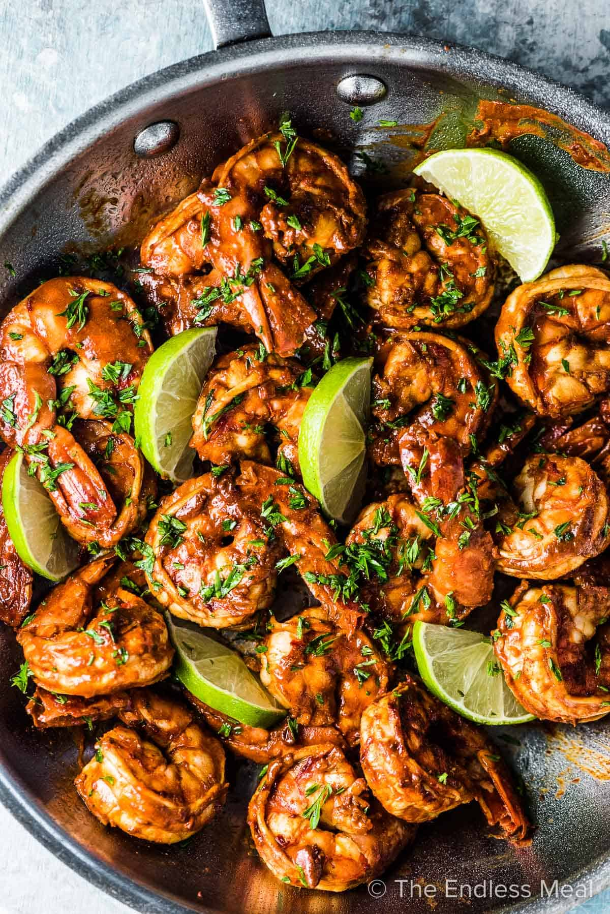
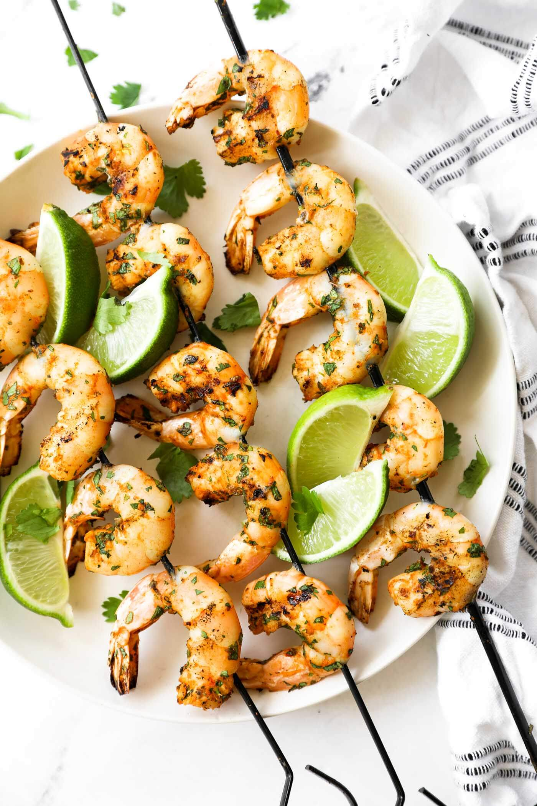

Home
Spicy Lime Grilled Shrimp

Description
Spicy Lime Grilled Shrimp packs a bold punch of flavor in every juicy bite. Marinated in a tangy blend of fresh lime juice, garlic, chili, and spices, these shrimp are grilled to perfection — smoky, slightly charred, and bursting with heat and citrus. Perfect for cookouts, tacos, salads, or served on skewers as a fiery appetizer, this dish is a vibrant crowd-pleaser that brings the heat with a refreshing twist.
Ingredients:
- 3 tablespoons Cajun Seasoning
- 1 lime, juiced
- 1 tablespoon vegetable oil
- 1 pound peeled and deveined medium shrimp (30-40 per pound)
Steps to follow:
- Mix together Cajun seasoning, lime juice, and oil in a resealable plastic bag.
- Add shrimp, coat with marinade, squeeze out excess air, and seal the bag. Marinate in the refrigerator for 20 minutes.
- Preheat an outdoor grill for medium heat and lightly oil the grate.
- Remove shrimp from marinade; shake off excess. Discard remaining marinade.
- Cook shrimp on the preheated grill until bright pink on the outside and the meat is no longer transparent in the center, about 2 minutes per side.
- Serve on a plate and enjoy with your favourite starch or carbs.
~Finished Product~
